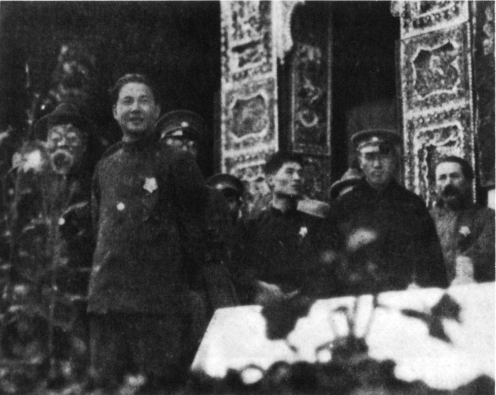
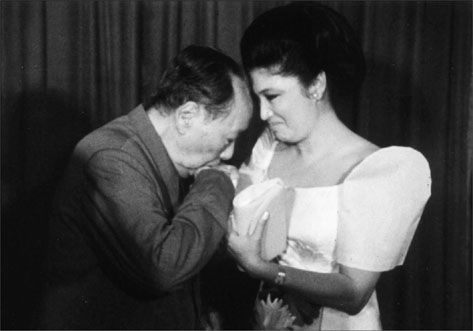
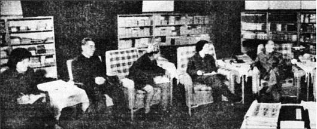
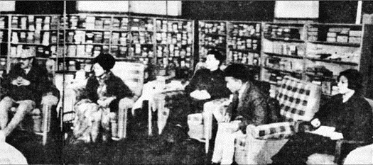

Photograph no. 10, by Auguste Francois, is reproduced by permission of Réunion des Musées Nationaux; no. 14, by Cecil Beaton, by permission of the Beaton Estate; no. 16, by permission of Getty Images; no. 19, by permission of Wang Danzhi; nos. 29 and 39, by permission of the Rossiiskii Gosudarstvennyi Arkhiv Kinofotodokumentov (the Russian State Archive of Photodocuments); no. 34, by Henri Cartier-Bresson, by permission of Magnum Photos; no. 45, by Du Xiuxian; no. 53, by Lu Houmin; nos. 61, 63, 64 and 65, by Li Zhensheng; nos. 67, 72, 76 and 77, by Du Xiuxian.
↑ The room where Mao was born, on 26 December 1893, in Shaoshan village, Hunan province.(photo illustration 1)
↑ Mao Tse-tung (right), in the only photograph of him with his mother, taken in Changsha in 1919, shortly before she died. Mao, aged twenty-five, is dressed in scholar’s garb, while his two younger brothers, Tse-tan (far left) and Tse-min, are still wearing peasant clothes.(photo illustration 2)
↑ Mao Tse-tung (right), wearing a black armband just after the death of his mother, with his father (second from left), uncle (second from right), and brother Tse-tan (far left), Changsha, 13 November 1919.(photo illustration 3)
↑ Yang Kai-hui, Mao’s second wife, with their two eldest sons, An-ying (right), aged two, and An-ching, aged one, Shanghai, 1924. Kai-hui was soon to be deserted by Mao, and executed by the Nationalists because of Mao. She left poignant manuscripts describing her disillusionment with communism and with Mao, whom she loved.(photo illustration 4)
↑ Moscow’s key agents in China. Grigori Voitinsky (above left 维经斯基) founded the Chinese Communist Party in 1920.
↑ Maring (above right 马林), the Dutch agitator, co-presided over the first congress of the Chinese Communist Party in Shanghai in 1921. He later broke with communism and was executed by the Nazis.
↑ Mikhail Borodin (far right 鲍罗廷), steered both the Nationalists and the Communists in 1923-27. He was in Canton, 1925, with Chiang Kai-shek (next to him), soon to become the Nationalists' leader, and Wang Ching-wei (front), Mao's patron in the Nationalist Party, and later head of the Japanese puppet government.
↑ Ruijin, 7 November 1931, the day the first Chinese Red state was founded, when Mao (second from right) became the “Chairman.” To his left Wang Jia-xiang; to his right: Xiang Ying, Deng Fa, military chief Zhu De, Ren Bi-shi and Gu Zuo-lin.(photo illustration 8)
↑ The leadership of the Red state held its first formal meeting on 1 December 1931. Mao standing, back to camera. Zhu De to Mao’s right. The Red state collapsed in October 1934, when the Long March began.(photo illustration 9)
↑ The bridge over the Dadu River at Luding, the site of the core myth about the Long March. Communist claims of fierce fighting here in 1935 were invented.(photo illustration 10)
↑ Mao (standing, third from left, looking Oscar Wilde-ish), in his post–Long March HQ, Yenan, September 1937, with some of the participants in the “Autumn Harvest Uprising” of 1927, the founding moment of the myth of Mao as a peasant leader. His third wife, Gui-yuan, is standing far right.(photo illustration 11)
↑ Mao (seated, second from left), with Red Army officers, including Zhu De (seated, third from left) and Mao’s closest crony, Lin Biao (seated, fourth from left), Yenan, 1937.(photo illustration 12)
↑ The four moles who helped doom the Nationalists. Shao Li-tzu (right) delivered Chiang Kai-shek’s son to Moscow in 1925 to be Stalin’s hostage for over a decade. To get his son back, Chiang let the Reds survive during the Long March.(photo illustration 13)
↑ Gen. Zhang Zhi-zhong (above) triggered off all-out war with Japan in 1937, diverting the Japanese into the heartland of China and away from Russia.(photo illustration 14)
↑ Gen. Hu Tsung-nan (below) offered up Nationalist forces en masse to Mao to be wiped out in 1947–48. “Hundred Victories”(photo illustration 15)
↑ Gen. Wei Li-huang (below right, center), photographed for Life magazine, delivered over half a million of Chiang’s best troops and Manchuria to Mao in 1948.(photo illustration 16)
↑ Generalissimo Chiang Kai-shek (front right) with Chang Hsueh-liang (“the Young Marshal”), the former warlord of Manchuria, who kidnapped Chiang at Xian in December 1936. The kidnap, which was co-ordinated with Mao, dealt the marginalized Reds back into the game.(photo illustration 17)
↑ Mao’s main Party rivals. Chang Kuo-tao (above left) with Mao in Yenan, 1937. Mao sabotaged Chang’s much larger army on the Long March; he then sent half the remainder to its doom in the Northwest desert, finally burying the survivors alive. Chang fled the Reds in 1938.
↑ Wang Ming (above right) with Mao shortly after arriving in Yenan from Moscow in late 1937, bringing Stalin’s orders for the CCP to fight Japan. Mao, who welcomed the Japanese invasion as a way to destroy Chiang Kai-shek, felt threatened by Wang Ming, and had him poisoned.
↑ Mao was in the minority in the Politburo over his “don’t fight Japan” policy, but reversed his political fortunes by scheming in autumn 1938, when the Politburo gathered in Yenan, here seen (below) in front of the Spanish Franciscan cathedral. From left: Mao, Peng De-huai, Wang Jia-xiang, Lo Fu, Zhu De, Po Ku (who tried to leave Mao behind on the Long March), Wang Ming, Kang Sheng, Xiang Ying, Liu Shao-chi, Chen Yun, Chou En-lai.(photo illustration 18)
↑ January 1937: Red Army troops entering Yenan, which became Mao’s home for a decade.(photo illustration 20)
↑ Yenan: the building constructed specially for the Party congress that enthroned Mao in 1945. Cave dwellings visible in the background, dug into the soft loess hills.(photo illustration 21)
↑ The Spanish Franciscan cathedral of Our Lady of Begona in Yenan. Completed in 1935, it was seized by the local Red leader, Liu Chih-tan, whom Mao soon eliminated. The site of many key Party meetings, including the one which reversed Mao’s fortunes.(photo illustration 22)
↑ Jung Chang, outside Mao’s official Yenan residence, interviewing a local farmer whose mother used to do Mao’s laundry.(photo illustration 23)
↑ Jon Halliday at the ruins of a churchlike edifice specially built in a remote valley outside Yenan for Party meetings; it was never used, as Mao had a secret residence next door and wanted to keep the place to himself.
↑ This secret compound (below) is unknown to this day. Mao lived in the “cave” to the right, with tunnels through the hills. The entrance was covered, and even had a sun awning. The only neighbors were several thousand well-guarded prisoners.(photo illustration 24)
↑ Mao with his third wife, Gui-yuan, in Yenan, 1937. She soon left him and went to Russia. She lived the rest of her life in and out of mental breakdowns.(photo illustration 26)
↑ Mao’s two surviving sons at the special school for children of foreign Communist leaders at Ivanovo, outside Moscow. An-ying, the eldest son, is the tall boy in the middle row, center. The banner above the portrait of Mao reads: “Long live the Communist International—the Organiser of the Struggle for the Victory of the Workers!”(photo illustration 27)
↑ Mao posing outside one of his residences in 1939 reading Stalin for a documentary by Stalin’s favorite film-maker, Roman Karmen, who duly reported back on Mao’s “devotion.”(photo illustration 28)
↑ A receipt signed by Mao for US$300,000 (worth about US$4 million in 2005) received from a Russian called Mikhailov, dated 28 April 1938.(photo illustration 29)
↑ In August 1945, when Japan surrendered, Stalin told Mao to go to Chongqing to play the negotiating game with Chiang Kai-shek. (Above) Mao in topee on arrival at Chongqing, with U.S. Ambassador Patrick Hurley (center). Chou Enlai to right of Hurley.
↑ When the civil war heated up, and Mao was on the verge of defeat, he was saved, unwittingly, by America’s mediator, General George C. Marshall. (Left) Marshall was seen off from Yenan on 5 March 1946 by Mao’s fourth wife, Jiang Qing, the later notorious “Mme Mao,” on her first outing as would-be “First Lady.”(photo illustration 30)
↑ A downcast Chiang Kai-shek visiting his ancestral temple for the last time before leaving Mainland China in 1949, with his son and heir, Ching-kuo (to left in hat).(photo illustration 32)
↑ Red troops entering Nanjing to a conspicuously cool welcome. The Communists later filmed reconstructions of the takeover of cities and showed them as if they were real events.(photo illustration 33)
↑ (Above) Mao proclaiming the founding of Communist China from the top of Tiananmen Gate, 1 October 1949.
↑ His first political campaign centered on mass executions, in front of organized crowds (below). “Only when this thing is properly done can our power be secure,” Mao pronounced.
The people being exhibited carry plaques announcing that they are “landlords” and “spies.”(photo illustration 34)↑ Looking grim, next to his patron and rival, Stalin, at the ceremony for Stalin’s seventieth birthday, Moscow, December 1949. To Stalin’s left is East Germany’s leader Walter Ulbricht, to whom Mao suggested building a wall; Mongolia’s Tsedenbal far right; Soviet Marshal Bulganin in the center (rear). Behind Mao’s right shoulder is his interpreter Shi Zhe, who provided us with much valuable information about Mao’s relationship with Stalin.(photo illustration 36)
↑ A long-faced Mao being shown the glories of Soviet animal husbandry in a freezing cowshed at Krasnogorsk, January 1950. Interpreter Shi Zhe on the left.(photo illustration 37)
↑ Tiananmen Gate bedecked with a portrait of the dead Stalin, 9 March 1953 (leaders just visible below Stalin’s portrait). Orders to the hundreds of thousands of people brought to the giant ceremony included “Don’t laugh.”(photo illustration 38)
↑ Mao holding up a wreath to Stalin’s portrait. Stalin’s death was Mao’s moment of liberation.(photo illustration 39)
↑ Post–Stalin Soviet supremo Nikita Khrushchev was willing to help turn China into a military superpower, which was Mao’s long-cherished dream. The two leaders embrace at Peking airport in August 1958. Interpreter Li Yueran on the left.(photo illustration 40)
↑ Riveted at the sight of a jet fighter (personal security overlord Luo Rui-qing on right).(photo illustration 41)
↑ “Power comes out of the barrel of the gun”: Mao at a military exercise, with (from left) Luo Rui-qing and President Liu Shao-chi.(photo illustration 42)
↑ A blonde dummy catches Mao’s eye at a Japanese exhibition in Peking in 1956. Mao was not here to check out fashion for Chinese women, who were restricted mostly to “Mao suits,” but to court the Japanese for strategic goods for his Superpower Program.(photo illustration 43)
↑ Mao liked to rule from bed, often summoning his colleagues from their own beds in the middle of the night. Chairs for his Politburo were set out at the foot of his huge book-strewn bed, on which he also romped with his numerous girlfriends.(photo illustration 44)
↑ In the Great Leap Forward (1958–61) Mao toyed with the idea of getting rid of names and identifying people by numbers. Peasants in his model province, Henan, working with numbers on their shirts.(photo illustration 45)
↑ False bumper harvests were invented in order to extract the maximum amount of food for export.(photo illustration 46)
↑ People were worked much harder in the Leap: a girl pulling a cart.(photo illustration 47)
↑ President Liu Shao-chi visiting his home village in Hunan in spring 1961. (Above) He listens aghast to an elderly peasant and (below) stares at an empty food utensil, with his wife, Wang Guang-mei. This trip propelled him to ambush Mao and halt the Leap—and the famine.(photo illustration 48)
↑ President Liu Shao-ch'i in his home village in Hunan (spring 1961). With his wife, Wang Guangmei, this trip propelled im to ambush Mao and halt the Leap - and the famine.
↑ Determined to fight back, Mao used his favorite hobby, swimming, as a political gesture to demonstrate strength and willpower.(photo illustration 50)
↑ Tibet’s Panchen Lama being denounced in front of a portrait of Mao;
↑ Ex-defense minister Peng De-huai (inset) paraded (left) in the Cultural Revolution; he was made to suffer a lingering death.(photo illustration 52)
↑ During the Cultural Revolution, Mao took revenge against Liu Shao-chi, seen here being struck by Little Red Book–wielding staff inside the leaders’ compound, Zhongnanhai. He died an agonizing death in captivity.
↑ Liu’s brave wife, Wang Guang-mei, being manhandled wearing a necklace of Ping-Pong balls and a label calling her a “political thief.”(photo illustration 54)
↑ Liu be trampled to the ground
↑ Everyday scenes in the Cultural Revolution. The “jet-plane” position (left), and brutal hair-cutting, always under a picture of Mao.(photo illustration 57)

↑ A rare picture catches how the population really looked during these years.(photo illustration 59)
↑ Defiant dissidents being shot before a crowd outside Harbin during the Cultural Revolution.(photo illustration 60)
↑ The Cultural Revolution was made possible by a horse-trade between Mao and Marshal Lin Biao. (Left) Lin alongside Mao (wearing Red Guard armband) on Tiananmen Gate, 1966. (Note Mao’s black teeth, which he rarely brushed. He did not have a bath or a shower throughout his twenty-seven-year reign.) Eventually, Mao and Lin fell out; (below) on May Day 1971 a sulking Lin (in cap, right) defied protocol and turned up on Tiananmen for only one minute, refusing to talk to Mao, or Cambodia’s Prince Sihanouk (next to Mao) or Princess Monique (next to Lin).(photo illustration 61)
↑ Lin Biao’s son, “Tiger” (right), is the only person known to have planned to assassinate Mao. In September 1971, Lin, his wife (center) and Tiger fled China by plane and crashed to their deaths in Mongolia, after Lin’s brainwashed daughter, Dodo (left), informed on them.(photo illustration 62)
↑ Wooing Cuba’s Che Guevara in 1960; Guevara was cut off when he came to be seen as too much of a competitor.(photo illustration 64)
↑ Flirting with the Philippines’ first lady Imelda Marcos, 1974.(photo illustration 65)
↑ Congratulating the Khmer Rouge in 1975, for bringing about a slave society in one fell swoop: Pol Pot (center); Foreign Minister Ieng Sary (right).(photo illustration 66)
↑ Premier Chou En-lai was the charming face of Mao’s tyranny. Mao used his services while blackmailing him for nearly half a century. In February 1972 Chou had a comfortable armchair (top) when U.S. president Nixon came calling. From left: Chou, Nancy Tang, Mao, Nixon, Kissinger, Winston Lord. By December 1973, Mao had banished Chou to a humiliating hard chair when meeting the Nepalese king (middle). At this time, Mao was withholding permission for Chou to have treatment for cancer, thus ensuring that Chou died before he did.(photo illustration 67)
↑ (Far left) In 1974, the newly rehabilitated Deng Xiao-ping (shortest, in front) formed an alliance with Marshal Ye Jianying (second from left) and Chou En-Lai (far right) against the Gang of Four, three of whose members are here: Mme Mao (in scarf), Wang Hong-wen (behind Deng) and Yao Wen-yuan (far left).(photo illustration 70)
↑ (Left) Mme Mao being restrained at her trial after Mao’s death. To her prosecutors, she said: “I was Chairman Mao’s dog. Whoever Chairman Mao asked me to bite, I bit.” She committed suicide in 1991.(photo illustration 72)
↑ In his last years, Mao increasingly identified with fallen leaders, especially disgraced U.S. ex-president Nixon, whom he flew to China for a private farewell in February 1976.(photo illustration 73)
↑ The last photograph of Mao was with Pakistan’s premier Zulfikar Ali Bhutto, 27 May 1976. Mao died on 9 September 1976. His twenty-seven-year rule brought death to well over seventy million Chinese.(photo illustration 74)